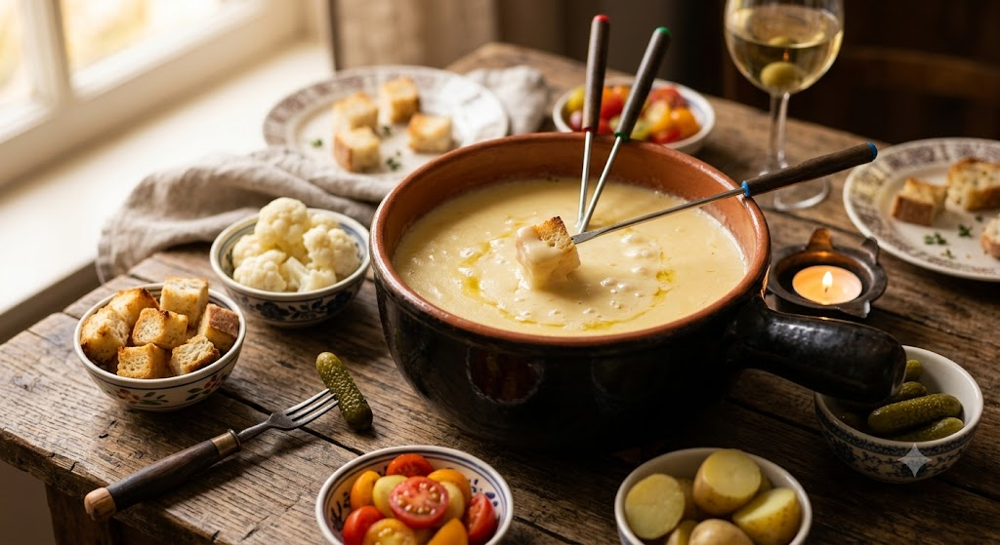

Scroll Down
独自配合のチーズは、鋭利な香りと深みのあるコクが自慢。一口食べれば、もう離れません。
雑居ビルの最奥、看板のない隠れ家。その秘匿性が、特別な夜をさらに特別なものに変えます。
木漏れ日のような灯りと木の温もり。他人の視線を気にせず、語らいに没頭できる座席。

厳選されたチーズと、宴を彩る旬の食材。新鮮な野菜が, 濃厚なチーズの海にダイブする。その瞬間, 最高の「志味」が蘇げます。
「ひっそりと隠れ家的なお店。雰囲気が落ち着くし、お気に入りのお店になりました。」
「チーズフォンデュうまかったぁ！接客も抜群。仙台来たらまた来たい！」
「場所は一瞬迷子になりそうでしたがwww 信じて進みましょう！最高の隠れ家です。」
スパークリングワイン1本無料
このページからご予約いただいたお客様限定。
特別な夜の始まりに、芳やかな泡沫を。
※ディナータイム・コース予約、または「LPを見た」とお伝えください。